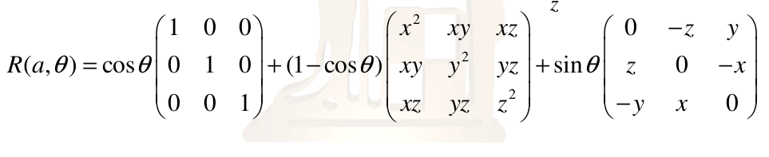

Camera Transformation
types of transformation
- modelling transformation:
- Size, place, scale, and rotate objects parts
- Object coordinates to world coordinates
- Viewing transforms:
- Rotate & translate the world to lie directly in front of the camera
- World coordinates to view coordinates
- Projection transforms:
- View coordinate to screen coordinates (Pixels)
Camera Movement:
previously we learned how we create and locate the camera using
void gluLookAt( GLdouble eyeX,
GLdouble eyeY,
GLdouble eyeZ,
GLdouble centerX,
GLdouble centerY,
GLdouble centerZ,
GLdouble upX,
GLdouble upY,
GLdouble upZ);
where the camera is located at eye , look at center , and keep orientation with up vector.
Now we want to move the camera around the scene so to move the camera a transformation must be applied to all scene points.
we need to create a coordinate frame by the camera where:
- The look vector is center minus eye
- Then use cross product with up vector
- Define a rotation matrix
- Apply the translation for camera (eye) location
Rotation about the Vertical direction in the window
the vertical direction with of the camera of course is parallel to the Up vector so what we need to do is to rotate all scene around up vector (only the eye is changed):
- Rotate the eye position about the up vector
- the up vector and the center point remain fixed
the following function rotates a point around a vector

void rotatePoint(double a[], double theta, double p[])
{
double temp[3];
temp[0] = p[0];
temp[1] = p[1];
temp[2] = p[2];
temp[0] = -a[2] * p[1] + a[1] * p[2];
temp[1] = a[2] * p[0] - a[0] * p[2];
temp[2] = -a[1] * p[0] + a[0] * p[1];
temp[0] *= sin(theta);
temp[1] *= sin(theta);
temp[2] *= sin(theta);
temp[0] += (1 - cos(theta))*(a[0] * a[0] * p[0] + a[0] * a[1] * p[1] + a[0] * a[2] * p[2]);
temp[1] += (1 - cos(theta))*(a[0] * a[1] * p[0] + a[1] * a[1] * p[1] + a[1] * a[2] * p[2]);
temp[2] += (1 - cos(theta))*(a[0] * a[2] * p[0] + a[1] * a[2] * p[1] + a[2] * a[2] * p[2]);
temp[0] += cos(theta)*p[0];
temp[1] += cos(theta)*p[1];
temp[2] += cos(theta)*p[2];
p[0] = temp[0];
p[1] = temp[1];
p[2] = temp[2];
}
HINT: up vector is already normalized (unit vector no need for normalization)
Rotate about the horizontal direction in the window
Both position of he camera (eye) and up vector are changed with the rotation but the center remain the same:
- Compute the current horizontal direction from the up vector and the look vector
- Rotate the eye about the horizontal direction
- Rotate the up vector about the horizontal direction
First rotation axis need to be computed form eye and vectors using cross product the following function computes cross product between vector a and b using the same previous equation:
void crossProduct(double a[], double b[], double c[])
{
c[0] = a[1] * b[2] - a[2] * b[1];
c[1] = a[2] * b[0] - a[0] * b[2];
c[2] = a[0] * b[1] - a[1] * b[0];
}
the computed vector is the rotation vector bu still need to be normalized: the following function normalizes a vector to a unit vector
void normalize(double a[])
{
double norm;
norm = a[0] * a[0] + a[1] * a[1] + a[2] * a[2];
norm = sqrt(norm);
a[0] /= norm;
a[1] /= norm;
a[2] /= norm;
}
then we rotate both up and eye vector around the normalized vector.
Move forward and backward with the camera for world navigation.
Another transformation could be applied to move by the camera in the 3d world.
moving forward:
Obviously when we move forward we move from our location towards the target in front of our sight. So first we compute direction vector of movement by subtracting the eye vector from the center vector.
direction[0] = center[0] - eye[0];
direction[1] = center[1] - eye[1];
direction[2] = center[2] - eye[2];
Then we update eye and center location by multiplying the speed of movement by the direction computed above.
eye[0] += direction[0] * speed;
eye[1] += direction[1] * speed;
eye[2] += direction[2] * speed;
center[0] += direction[0] * speed;
center[1] += direction[1] * speed;
center[2] += direction[2] * speed;
HINT: up vector remain the same in forward and backward movement.
Question what is the different between forward and backward movement?s
OpenGL Double Buffering
Double buffer is a technique for tricking the eye into seeing smooth animation of rendered scenes. it consists of:
- Front buffer used for current scene display
- Back buffer used by the application to process the next scene without interrupting the current one
We swap the buffer after each display to view the rendered new scene. To enable Double buffering:
glutInitDisplayMode( GLUT_RGB | GLUT_DOUBLE );
You must clear the color buffer after each display so you include the following line to your display function:
glClear( GL_COLOR_BUFFER_BIT );
and at the end of the display function we swap the buffers
glutSwapBuffers();
OpenGL Depth Buffering
Depth buffering is a technique to determine which primitives in your scene are occluded by other primitives when mapping from the world coordinates to the screen coordinates (projection).
Each pixel in a primitive is rasterized, its distance from the eye point of the camera (depth value) and compared with the values stored in the depth buffer. if the pixel depth is less than the one stored from previous display in the depth buffer its depth is stored in the depth buffer instead of it. Moreover, the color value of the pixel in the depth buffer is written in the color buffer.
to enable depth buffering with double buffering
glutInitDisplayMode(GLUT_RGB | GLUT_DOUBLE| GLUT_DEPTH );
and in your display function test the depth buffer
glEnable( GL_DEPTH_TEST );
and clear both color and depth buffer after each frame.
glClear(GL_COLOR_BUFFER_BIT | GL_DEPTH_BUFFER_BIT );